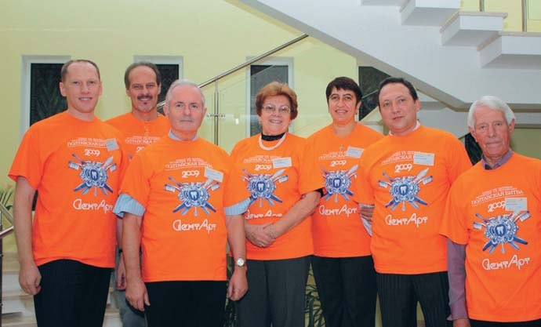
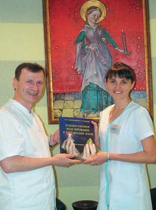
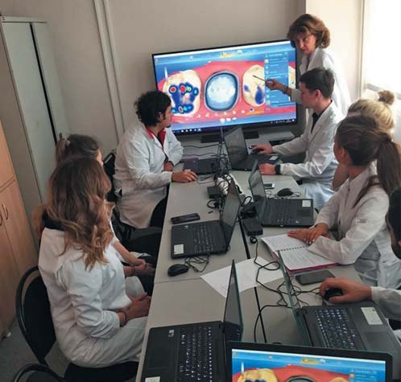
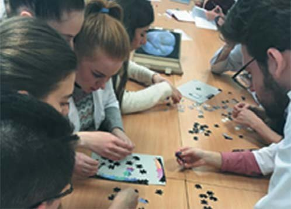
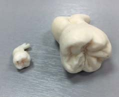
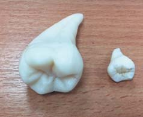
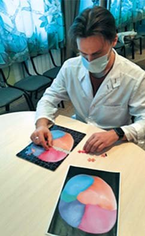
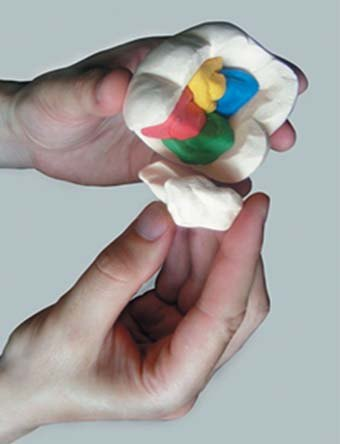
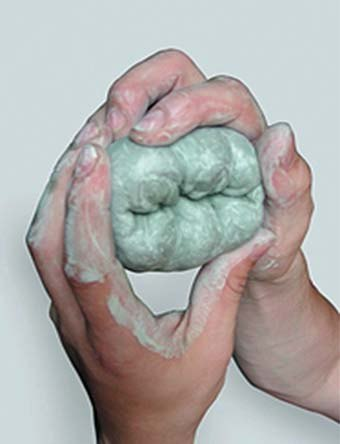
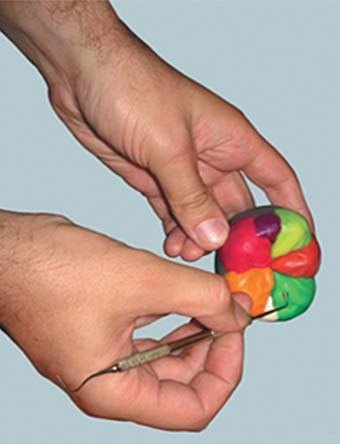

Безперервне навчання · журнал «ДентАрт» 2021 №1
Потреба вивчення варіативної анатомії та алгоритмів моделювання зубів
NECESSITY OF THE VARIATIVE ANATOMY AND ALGORITHMS OF TEETH MODELLING
В останні роки стоматологічні школи по всьому світу пропонують інноваційні освітні стратегії й альтернативи існуючим навчальним планам викладання анатомії зубів. Було розроблено і впроваджено нові технології для зміни традиційних аспектів викладання моделювання зубів. Ці технології передбачають використання інтерактивного програмного забезпечення, тривимірних (3D) зображень, цифрових атласів для вивчення детальної морфології, віртуального моделювання зубів. Крім того, цифрові відеодиски (DVD) та відеоролики YouTube стали популярними інструментами для навчання техніці карвінгу (вирізання зубів з мила, воску, гіпсу) і воскового моделювання.17,18
Відсутність методичних систем навчання, орієнтованих на розвиток інтелектуального і творчого потенціалу студентів, є серйозною проблемою у навчальному процесі вищої школи, що згодом призводить до виникнення негативних ситуацій у практичній охороні здоров'я.4
Для створення природної якісної реставрації потрібні вивчення варіативної анатомії та законів формоутворення зубів, розвиток просторового мислення. Ці знання необхідні для роботи з CAD/CAM-технологіями (3D-моделювання) і воскового моделювання, підвищення рівня володіння різними методами відновлення твердих тканин зубів композитом.2,6,8,10,11
Величезний матеріал з вивчення морфометричних параметрів зубів нагромадили вчені-антропологи (одонтологи), але використання цієї інформації не завжди доступне для лікарів-стоматологів.1,9,14,15,19,21-23
У результаті опитування лікарів виявлено рівень потреби стоматологічної спільноти у вивченні анатомії, формоутворення і варіабельності форм зубів. Були досліджені питання, що стосуються оцінки ступеня теоретичної і практичної підготовки респондентів у період їхнього навчання у вищих навчальних закладах.3,13
Для реалізації поставлених завдань були складені анкети для опитування лікарів-стоматологів, які мають різний професійний стаж і спеціалізацію, з можливими варіантами відповідей. Проаналізовано прагнення 157 лікарів (81 стоматолог-терапевт, 67 стоматологів-ортопедів, 9 лікарів, що мають дві спеціалізації – терапевтичну і ортопедичну) до вдосконалення практичних навичок у моделюванні зубів із застосуванням інноваційних реставраційних технологій. Вибірка містила рівну кількість фахівців-терапевтів і фахівців-ортопедів (p>0,1). Наявність двох спеціалізацій не впливала на імовірнісний розподіл респондентів.
Ми вважали принципово важливим визначити предмет соціологічної експертизи як готовність лікарів-стоматологів до вивчення дентальної анатомії і застосування інноваційних технологій у моделюванні твердих тканин зубів.
Учасниками дослідження стали лікарі-стоматологи з різним стажем професійної діяльності. Респонденти були квотовані по групах у залежності від стажу (від 0 до 10 років, від 10 до 20 років, понад 20 років). Для участі в експертизі були запрошені лікарі з 11 міст, серед яких Полтава (Україна) і Кишинів (Республіка Молдова).
Опубліковані нижче результати і висновки – наслідок збору експертних оцінок, вони не можуть бути у повному розумінні зрізом громадської думки усієї професійної спільноти стоматологів. Однак вони є безумовним індикатором професійних уявлень і очікувань фахівців, як і основою для формулювання проблеми.
Для обробки результатів експертизи використовувалися методи математичного і факторного аналізу. Перевірка значущості показників провадилася за критерієм хі-квадрат. Збір експертних оцінок здійснювався заочно, на основі письмового інтерв'ю.
Результати опитування
Доведено, що дипломовані фахівці-стоматологи, незалежно від стажу роботи та кваліфікації, демонструють високий рівень очікувань впровадження інноваційних технологій відновлення і моделювання зубів.
Нас цікавила відповідь на питання: «При відновленні твердих тканин зубів вінірами і вкладками якій методиці Ви надаєте перевагу?». 60,5% респондентів надавали перевагу непрямим методам виготовлення конструкцій, переважно це були лікарі-ортопеди, 19,1% – прямим, 20,4% не змогли відповісти.
У блоці експертних питань була сформульована пряма постановка проблеми: «Чи вважаєте Ви актуальним відновлення форми зубів композитами?». Незалежно від професійного стажу і спеціалізації, переважна кількість респондентів (86%) вважали це актуальним.
Донині дискутабельним є питання про метод відновлення коронкової частини зуба при втраті твердих тканин понад 1/2. За прийнятими стандартами, при такому дефекті рекомендовано відновлення коронкової частини зуба ортопедичними конструкціями. Але коли йдеться про індивідуальний підхід, то лікарі у 77,1% випадків обирають ортопедичний метод відновлення, а в 26,1% – терапевтичний. Вибір методу безпосередньо корелював з тією школою, де стоматологи навчалися і підвищували професійну кваліфікацію. Наявність певної школи майстерності впливає на вибір методу відновлення зуба. Ретельне дотримання алгоритму техніки прямої реставрації, використання систем ізоляції зубів від вологи ведуть до гідного довгострокового результату. Респонденти школи С. В. Радлінського (Полтава, Україна) надають перевагу роботі з композитами при відновленні дефектів твердих тканин зубів,12 враховують принципи біоміметики, дбайливо ставлячись до життєздатності пульпи зуба.
Питання: «Чи відчуваєте Ви при відновленні зубів потребу в знаннях, а також ілюстративному матеріалі з анатомії коронок зубів, зубних рядів?» не викликало розбіжностей. 74,5% респондентів відповіли ствердно, демонстрували прагнення підвищувати рівень професійної підготовки в галузі дентальної анатомії зубів, зубних рядів. Приємно відзначити, що при відновленні дефектів зубів 15,7% лікарів ґрунтуються на використанні ілюстративного матеріалу (малюнки, фотографії), 11,7% – на вивченні моделей, 27,7% по можливості орієнтуються на однойменний зуб, 29,1% користуються знаннями анатомії, 12,9% покладаються на досвід та інтуїцію, 2,8% створюють авторський підхід.
Свій професіоналізм у моделюванні зубів лікарі вдосконалюють різними способами. 23% читають професійну літературу, 19,5% відвідують конференції, 18,1% проходять онлайн-навчання, 19,7% дивляться відеофільми, 19,7% відвідують майстер-класи. Тобто професійна стоматологічна спільнота вимагає розширення методичної, інформаційної, експериментальної бази з вивчення дентальної варіативної анатомії.


Нам було цікаво проаналізувати наявні у лікарів-стоматологів знання з формоутворення зубів, дізнатися, з якими теоріями вони знайомі. Однак 51,6% опитаних не змогли відповісти на це запитання. 48,4% респондентів мали деякі знання у цій сфері, зазначали такі теорії, як теорія злиття зубних зачатків Резе – Кюкенталя, тритуберкулярна теорія диференціації Копа – Оборна, теорія Болька, теорія конусноспіральної симетрії, теорія амфікона, теорії інгібіторного і патернуючого каскаду, теорія метамерних варіацій у класах зубів. Багато хто з респондентів демонстрував знання формоутворення зубів з урахуванням модульних технологій за Л. М. Ломіашвілі (2004), де ікло є модулем і служить одиницею вимірювання для надання пропорційності зубу в цілому і його частинам. Воно відіграє роль особливо важливого коефіцієнта, фрактальної одиниці для побудови складніших систем. Використовуючи форму ікла або частину його елементів і застосовуючи різні алгоритми побудови, можна отримувати різноманітні кількісні та якісні варіації зубів.5,7
Викликало труднощі запитання про поняття «редукція зубощелепного апарату, наявність внутрішньоротових і міжгрупових морфогенетических полів», про терміни «ключовий зуб», «варіабельний зуб». Ученими, на праці яких спиралися респонденти, були: О. О. Зубов, В. К. Леонтьєв, В. А. Дістель, Н. І. Халдєєва, І. В. Мастерова, О. І. Постолакі, С. В. Радлінський, Л. М. Цепов, А. І. Ніколаєв.
Слабкою ланкою у підготовці лікарів-стоматологів виявилося питання знань про варіабельність форм зубів. Незалежно від профільної спеціалізації, лікарі не могли назвати класифікаційні ознаки приналежності зубів до тієї чи іншої групи. Лише 29,3% респондентів відзначили ті ознаки (кількість і вираженість горбиків, контури, форми), що лежать в основі градації зубів. На превеликий жаль, 70,7% лікарів не знайомі з перерахованими поняттями, не змогли відповісти на це запитання.
Методи вимірювання зубів, оцінка їх розмірів (істинних та інтегральних характеристик) також викликали труднощі у більшості респондентів. 32,5% взагалі не знайомі з визначенням морфометричних показників, лише 67,5% вказали на деякі з них у своїх відповідях. Ще менше лікарів використовують біометричні вимірювання у клінічній практиці.
Недостатність фундаментальних знань у галузі дентальної анатомії, формоутворенні, варіабельності форм зубів привела нас до постановки проблеми: «Чи достатньо часу приділяється питанням моделювання зубів у період навчання студентів у вищих навчальних закладах?». 63,7% опитаних відповіли, що в процесі навчання цим питанням надається недостатньо уваги. Респонденти вказали на потребу збільшення кількості годин для вивчення дентальної анатомії і розвитку мануальних навичок при роботі з підручними матеріалами.
Відновлюючи тверді тканини зубів, лікарі-терапевти у 45,2% випадків використовують метод поступового накладання матеріалу (від меншого до більшого). Естетична і функціональна досконалість реставрацій забезпечується застосуванням техніки пошарового відновлення анатомічної форми, що відповідає структурі натуральних зубів. Ефект «природності» кольору відновленого органа досягається завдяки моделюванню різних шарів зуба полімерними масами різного відтінку і прозорості. Правильність відновлених форм є провідною ланкою у реставраційній техніці. Грамотне моделювання морфологічних елементів зубів має своїм наслідком те, що новоутворені конструкції з композитних матеріалів гармонійно поєднуються з навколишнім середовищем ротової порожнини. 3,2% лікарів висікають надлишок пломбувального матеріалу (від більшого до меншого). Варто зазначити, що 51,6% респондентів, як лікарі-терапевти, так і лікарі-ортопеди, відновлюють тверді тканини зубів, поєднуючи обидві згадані методики.
Нас цікавило, як часто у своїй практиці терапевти-стоматологи знімають відтиски, отримують моделі. Виявилося, що 52,9% лікарів володіють цими маніпуляціями і використовують їх у клінічній стоматології. Методикою воскового моделювання (wax-up) для подальшого виготовлення і використання силіконового ключа володіють 50,3% респондентів.
Використання сучасних технологій, обладнання викликає певні труднощі у лікарів-стоматологів незалежно від стажу роботи та кваліфікації. Так, 42,7% респондентів відчувають складнощі в роботі з CAD/CAM-системами (в тому числі CEREC), сканерами, 3D-моделюванням реставрацій (наприклад, у програмі EXOCAD DentalCAD), використанні дентальних мікроскопів, бінокулярних луп. Проте 57,3% лікарів з інтересом освоюють інноваційне обладнання та реально застосовують його у практичній діяльності. 24,8% лікарів використовують дентальний мікроскоп при моделюванні зубів. 31,4% відновлюють рельєф зубів до борозни 1 порядку, 45,9% – до борозни 2 порядку і лише 9,2% – до борозни 3 порядку із застосуванням збільшення (лупи, лінзи, бінокулярні окуляри, дентальний мікроскоп). 13,5% респондентів не змогли відповісти на це запитання. Використання цієї техніки дозволяє професіоналам підвищити якість стоматологічної допомоги як на етапі діагностики, так і при лікуванні захворювань щелепно-лицьової ділянки. Візуалізуються важкодоступні зони окремих органів, є можливість ретельної обробки поверхонь тканин, деталізується ступінь препарування емалі, дентину зубів. Робота зі збільшенням дозволяє впровадити в естетичну стоматологію концепцію мінімально інвазивного втручання. Збільшення об'єкта дозволяє стоматологові в межах операційного поля приділити увагу більш тонкій деталізації рельєфу новостворених поверхонь. Широке використання операційних мікроскопів у реконструктивній терапії дозволяє створювати естетико-функціональні реставрації зубів з урахуванням їх індивідуальних форм.16,20
На превеликий жаль, лише 59,2% стоматологів вивчають одонтогліфіку зубів. 89,2% враховують конституціональні особливості та використовують ці знання при моделюванні зубів.
Приємно відзначити, що лікарям-стоматологам не байдужі віддалені результати своєї роботи: 43,9% регулярно ведуть динамічне спостереження за відновленими зубами, 5,3% – через 2 роки, 19% – через рік, 31,7% – через 6 місяців. 88,5% респондентів отримують естетичне задоволення, оцінюючи результати своєї роботи.
Лікарів запитували: «Як відбувається критичний аналіз ситуації в ротовій порожнині, чи використовується фотореєстрація зубів пацієнтів до, під час, після відновлення зубів, зубних рядів?». 28% стоматологів використовують фотопротоколи у своїй практичній діяльності.
На жаль, викликало труднощі запитання: «Чи знайомі Ви з методами визначення жувальної ефективності зубощелепного апарату людини?». 66,2% лікарів відповіли «так» і перерахували конкретно відомі їм методи (статичні, динамічні). Серед авторських методик прозвучали імена вчених С. Є. Гельмана, І. С. Рубінова, І. М. Оксман, М. І. Агапова, В. Ю. Курляндського, І. В. Токаревича, О. М. Ряховського, Л. М. Ломіашвілі, С. Г. Михайловського, Д. В. Погадаєва, А. А. Стафєєва, С. І. Соловйова. Деякі респонденти для оцінки функціонального стану зубощелепного апарату використовували метод клінічної діагностики та аналізу оклюзійних контактів T-scan, вперше розроблений фірмою Tekscan (Бостон, Массачусетс, США, 1987).
Нам було цікаво проаналізувати, яким видом творчості захоплювалися лікарі-стоматологи раніше. 73,9% з них ліпили, малювали, в'язали, вишивали, захоплювалися грою на музичних інструментах, різьбленням по дереву. Приємно відзначити, що більшість респондентів з дитинства розвивають мануальні навички, дрібну моторику, а це, як відомо, безпосередньо поєднується з розвитком інтелекту, мислення, пам'яті.
Хочеться поділитися одним з видів пізнавальної діяльності, використовувати який можна в навчальному процесі, освітньому модулі «Пропедевтична стоматологія». Вивчати дентальну морфологію можна, використовуючи пазли із зображенням зубів (фото 2, 4). Це чудова перевірка на знання анатомії, кмітливість, швидкість мислення, розвиток просторового орієнтування. У формі «гри» студенти із задоволенням виявляють свою ерудицію, кмітливість, спритність. Можна брати участь як індивідуально, так і в команді. Хто швидше і правильніше збере кінцевий варіант об'єкта, той і перемагає! Це цікавий методичний підхід, здійснювати який можна серед студентів, ординаторів, зубних техніків, лікарів.
При вивченні клінічної анатомії та моделюванні зубів на кафедрах ортопедичної стоматології МІ РУДН (завідувач кафедри – доктор медичних наук, професор І. Ю. Лебеденко) (фото 1-3), терапевтичної стоматології ОмДМУ (завідувачка кафедри – доктор медичних наук, професор Л. М. Ломіашвілі) (фото 5-7) використовується креативний підхід, розкривається творчий потенціал студентів.








Висновки
Зроблена нами експертиза потреби вивчення фундаментальних основ варіативної анатомії та вдосконалення алгоритмів моделювання зубів засвідчила, що ця проблема ще не структурована у професійній свідомості у повному обсязі. Зберігається гостра потреба в ілюстративному навчально-методичному матеріалі. Потрібні розробка та впровадження в освітній процес ВНЗ і практичну охорону здоров'я навчально-методичного комплексу «Варіативна дентальна анатомія як основа гармонійного моделювання зубів і зубних рядів».
Література
- Зубов А. А., Халдеева Н. И. Одонтология в антропофенетике / Рос. АН, Ин-т этнологии и антропологии им. Н. Н. Миклухо-Маклая. – М.: Наука, 1993. – 223 с.
- Кано Пауло. Постигая природу: восковое моделирование эстетических и функциональных окклюзионных поверхностей. – М.: Азбука, 2011. – 371 с.
- Левченкова Н. С. Качество и удовлетворенность студентов образовательным процессом на кафедре терапевтической стоматологии СГМУ / Н. С. Левченкова, Л. М. Цепов, А. И. Николаев и др. // Смоленский медицинский альманах. – 2019. – № 2. – С. 54-58.
- Ломиашвили Л. М., Мусиенко А. И., Золотова Л. Ю., Погадаев Д. В., Михайловский С. Г. Реализация учебно-методического комплекса по моделированию зубов в рамках дисциплины «Стоматология». Метод. реком. – Омск: Изд-во ОмГМУ, 2016. – 52 с.
- Ломиашвили Л. М. Искусство моделирования зубов. Атлас / Л. М. Ломиашвили, Д. В. Погадаев, С. Г. Михайловский, Л. Г. Аюпова // Омск: Изд-во ИП Синеговский К. В., 2016 – 349 с.; ил.
- Ломиашвили Л. М. Изучение анатомо-топографических особенностей тканей зубов с целью достижения достойных результатов моделирования в эстетической стоматологии / Л. М. Ломиашвили, С. Г. Михайловский, Д. В. Погадаев, Л. Ю. Золотова // Институт стоматологии. – 2019. – № 3(84). – С. 110-114.
- Ломиашвили Л. М. Зуб как гармоничный объект, созданный природой / Л. М. Ломиашвили, Д. В. Погадаев, С. Г. Михайловский, С. В. Вайц, О. В. Гателюк, Л. А. Симонян // Клиническая стоматология. – 2020. – № 2(94). – С. 14-18.
- Луцкая И., Чухрай И., Новак Н., Марченко Е. Инновации в программе повышения квалификации врачей-стоматологов // Наука и инновации. – 2015. – № 7(149). – С. 66-70.
- Мастерова И. В., Габриелян И. К., Хван В. И. Этнический фактор в стоматологии как звено персонализированной медицины // Стоматология. – 2019. – Т. 98, № 5. – С.108-112. doi: 10.17116/stomat201998051108
- Постолаки А. И. Компьютерная геометрическая морфометрия боковых зубов // ДентАрт. – 2019. – № 1. – С. 36-45.
- Постолаки А. И. Биоморфологические законы и закономерности в развитии и строении зубочелюстно-лицевой системы человека. Часть I // ДентАрт. – 2020. – № 2. – С. 61-72.
- Радлинский С. В. Системная реновация реставрированных зубов. Нижние зубы // ДентАрт. – 2019. – № 3. – С. 25-34.
- Смердина Л. Н. Необходимость восстановления окклюзионной поверхности моляров / Л. Н. Смердина, Ю. Г. Смерлина, А. С. Мулин, Д. С. Сергеева // Актуальные вопросы стоматологии. Материалы Всероссийской научно-практической конференции. Издательство ФГБОУ ВО «КГМУ». – 2019. – С. 105-108.
- N. H. Felemban, Bhari S. Manjunatha. Prevalence of the number of cusps and occlusal groove patterns of the mandibular molars in a Saudi Arabian population // J Forensic Dent Sci. – 2017. – Vol. 49. – Р. 54-58.
- Hong-Il Yoo, Dong-Wook Yang, Mi-Yeon Lee, Min-Seok Kim, Sun-Hun Kim. Morphological analysis of the occlusal surface of maxillary molars in Koreans // Am J Phys Аnthropol. – 2016. – Vol. 67. – Р. 15-21.
- Mamoun J. Preparing and Restoring Composite Resin Restorations. The Advantage of High Magnification Loupes or the Dental Surgical Operating Microscope // N Y State Dent J. – 2015. – Vol. 81(4). – Р. 18-23.
- Sergio Varela Kellesarian. Flipping the Dental Anatomy Classroom // Dent. J. – 2018. – Vol. 6(3), 23.
- Lone M, Vagg T, Theocharopoulos A, Cryan JF, Mckenna JP, Downer EJ, Toulouse A. Development and Assessment of a Three-Dimensional Tooth Morphology Quiz for Dental Students // Med J Islam Repub Iran. – 2019. – Vol. 12(3). – Р. 284-299.
- N. H. Felemban, Bhari S. Manjunatha. Prevalence of the number of cusps and occlusal groove patterns of the mandibular molars in a Saudi Arabian population // J Forensic Dent Sci. – 2017. – Vol. 49. – Р. 54-58.
- Pascotto R.C., Benetti A.R. The clinical microscope and direct composite veneer // Oper Dent. – 2010. – Vol. 35(2). – Р. 246-249.
- Peckmann T.R., Meek S., Dilkie N., Mussett M.J. Sex estimation using diagonal diameter measurements of molar teeth in African American populations // J Forensic Leg Med. – 2015. – Vol.36. – Р. 70-80.
- Phulari R. G. S., Rathore R., Takvani M. D., Jain Shivani. Evaluation of occlusal groove patterns of mandibular first and second molars in an Indian population: A forensic anthropological study // Indian Journal of Dental Research. – 2017. – Vol. 28 (3). – Р. 252-255.
- Mark Sorenti, Marнa Martinуn-Torres, Laura Martнn-Francйs, Bernardo Perea-Pйrez. Sexual dimorphism of dental tissues in modern human mandibular molars // Am J Phys Аnthropol. – 2019. – Vol.169 (2). – P. 332-340.